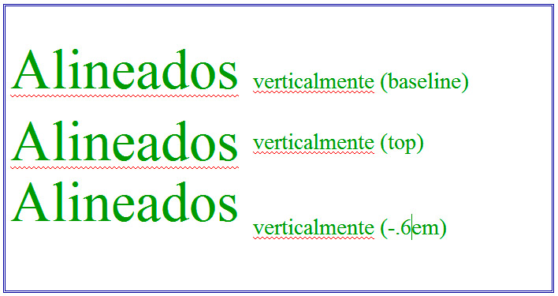

Espacios
La propiedad letter-spacing modifica el espacio entre los caracteres de una palabra y word-spacing hace lo mismo pero entre palabras.
Las medidas que se emplean en ambos casos son las mismas que ya vimos para el tamaño de letra. Además podemos emplear el valor normal para reestablecer cualquiera de los dos valores, si los hemos modificado en otro elemento. Aquí tenemos algunos ejemplos, que darían el resultado de la figura:
p {letter-spacing:normal}
p {letter-spacing: 12 px}
p {letter-spacing: -.1em}
p {word-space: 1.5 em}
p {word-space: 3 em}
En el eje vertical podemos emplear la propiedad line-height para incrementar o reducir el espacio entre líneas. Las dos líneas siguientes modifican la separanción entre líneas de un párrafo:
p {line-height:1em}
p {line-height:2em}
Mientras que la primera elimina casi por completo el espacio entre líneas, la segunda pone el texto a doble espacio. En la figura se pueden comparar tres párrafos: el primero sería el modelo normal y los dos siguientes corresponden a las líneas anteriores.
Mayúsculas y minúsculas
Con la propiedad text-transform podemos convertir un bloque de texto completo en:
- Mayúsculas: con el valor uppercase.
- Minúsculas: valor lowercase.
- Primera en mayúsculas, resto en minúsculas: capitalize convierte la primera letra de cada palabra a mayúscula.
- Dejar el texto como está: emplearemos el valor none.
La figura nos presenta las diferentes modalidades:
Alineación entre elementos
La propiedad vertical-align nos será útil para definir la alineación entre dos o más elementos que no tengan la misma altura, por ejemplo, un texto y una imagen o textos de diferente tamaño, como los que se muestran en la figura:

Su composición, si la segunda parte fuese, por ejemplo, una clase aplicada a un valor span, quedaría así:
span.parte2 {vertical-align:baseline}
span.parte2 {vertical-align:top}
span.parte2 {vertical-align:-.6em}
Contamos con un amplio muestrario de parámetros, como se puede observar. Podemos definir valores relativos, absolutos o utilizar algunas palabras clave como top (alineación superior), bottom (inferior), baseline (se alinean sus lineas base), etc. Este tipo de propiedades se suele modificar con algún tipo de editor, por lo que no es necesario recordar todos sus valores.
Sangrado del texto
El sangrado (a veces denominado indentación, en referencia al término inglés) consiste en desplazar a la izquierda o a la derecha la primera línea de un párrafo. Con CSS se puede realizar mediante la propiedad text-indent, seguida de algún valor numérico absoluto o relativo.
La figura nos muestra el resultado que se produce con la siguiente línea:
p {text-indent: 2.5em}
p {text-indent: 3%}
Valores relativos o absolutos
Este ejemplo ilustra perfectamente la diferencia entre valores relativos y absolutos. El primer párrafo tiene aplicada la primera línea, es decir, el valor exacto y absoluto. Por el contrario, la segunda tiene el valor porcentual, el relativo. Se desplaza la línea un 3% del tamaño horizontal de la ventana del navegador.
Ambas líneas parecen iguales pero, si ampliamos el tamaño de la ventana del navegador, observaremos que la primera línea se mantiene en la misma distancia, mientras que la segunda ha variado, ya que el 3% de un valor mayor será una distancia notablemente mayor.
Dependiendo del sitio web que estemos diseñando, nos resultará más conveniente usar valores relativos o absolutos. Por lo general los valores relativos aportarán flexibilidad a nuestra página web.
Alineación del texto
Otro factor clásico de cualquier editor de texto es su capacidad de alinear el texto horizontalmente a la izquierda, derecha, centrado o justificado. Con CSS se realiza mediante la propiedad text-align.
Es tan simple como añadir alguna regla de este tipo:
body {text-align: justify; }
h1 {text-align: right;}
Los valores posibles son left (izquierda, el predefinido), right (derecha), center (centrado) o justify (justificado).
Espacios en blanco
La propiedad white-space controla el tratamiento que hace el navegador de los espacios en blanco. Los navegadores tienden a comprimir o ampliar esos espacios para ajustar las palabras en las líneas. Para evitarlo, podemos utilizar el valor pre con la propiedad white-space y así conseguir que éstos no se modifiquen. Esto es útil si tenemos un texto exacto, fórmulas, un poema, etc. Las rupturas de línea que tuviese el texto original se respetarán escrupulosamente.
Igualmente, si indicamos la opción nowrap, el navegador no cortará las líneas, sino que mantendrá cada párrafo o bloque de texto en la misma línea. La línea se prolongará hacia la derecha todo lo que sea necesario.
Ajuste de palabras
La propiedad word-wrap permite, con el valor break-word, la ruptura de palabras que no serían divisibles en circunstancias normales, como palabras muy largas en cuadros de texto pequeños. Su valor predeterminado es normal, permite la ruptura cuando sea posible y si no, se traslada la palabra a la línea siguiente.
Decoración del texto
La propiedad text-decoration cuenta con algunos valores para decorar una línea de texto. Por ejemplo, para un rótulo <h1>:
- h1{text-decoration:none;} elimina cualquier decoración que pueda tener un elemento.
- h1{text-decoration:underline;} el texto aparece subrayado.
- h1{text-decoration:overline;} el texto se presenta con una línea por encima.
- h1{text-decoration:line-through;} el texto se muestra tachado.
- h1{text-decoration:blink;} el texto parpadea, distrayendo la atención sobre el resto de la página. Se debe usar con mucho criterio.
Estas opciones se emplean con frecuencia para tachar un texto que ya no vale o para resaltar los estados de un enlace, mediante sus pseudoselectores. Por ejemplo, el enlace de la figura se resalta mediante un underline y un overline al pasar el ratón sobre el.
Para conseguirlo, hemos añadido estas dos líneas a nuestro archivo de estilos:
a:link {text-decoration: none; }
a:hover {text-decoration: overline underline;}
Sombras
Con CSS3 es posible añadir sombras a un texto con la propiedad text-shadow; así de fácil:
h1 { text-shadow: rgb(90,90,90) 2px 2px 4px };
Lleva cuatro parámetros:
- Color: expresado de diferentes maneras, es además opcional.
- X e Y: los dos valores siguientes son obligatorios e indican la distancia de la sombra.
- Suavizado: el último valor es opcional y especifica lo difuminada que se mostrará la sombra.
El resultado se muestra en la figura:
Para obtener unas sombras apropiadas, es necesario realizar algunas pruebas e intentar conseguir el efecto que buscamos.
La figura siguiente muestra esta otra combinación, mucho más difuminada y con un toque de color.
h1 {text-shadow:rgb(160,160,90) 4px 4px 16px;}
Actividad 3
Pregunta Verdadero-Falso
Verdadero Falso
Verdadero Falso
Verdadero Falso
Verdadero Falso